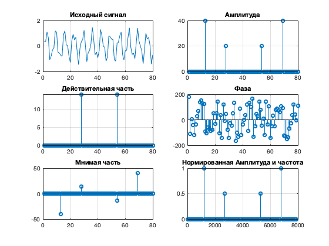
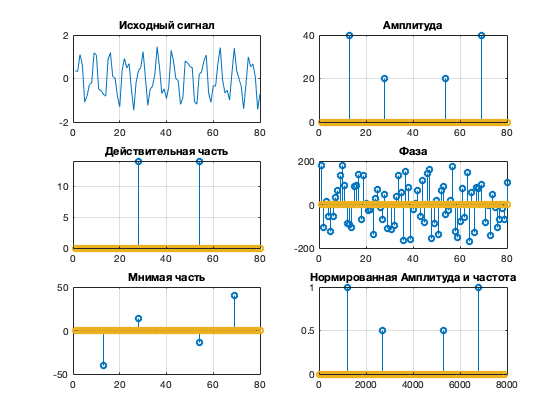

clear;
close all;
fs = 8000;
ts = 0 : 1/fs : 0.01-1/fs;
N = length(ts);
x = sin(2*pi*1200*ts) + 0.5*sin(2*pi*2700*ts + 3*pi/4);
tic;
X1 = zeros(N);
for m = 1 : N
for n = 1 : N
X1(m) = X1(m)+ x(n) * (cos(2*pi*(m-1)*(n-1)/N)-...
1i*sin(2*pi*(m-1)*(n-1)/N));
end
end
toc;
tic;
X = fft(x);
toc;
figure('Name', 'БПФ');
subplot(3, 2, 1);
plot(x); grid on; title("Исходный сигнал");
subplot(3, 2, 3);
stem(real(X)); grid on; title('Действительная часть');
subplot(3, 2, 5);
stem(imag(X)); grid on; title('Мнимая часть');
subplot(3, 2, 2);
stem(abs(X)); grid on; title('Амплитуда');
subplot(3, 2, 4);
stem(angle(X)*180/pi); grid on; title('Фаза');
Xm = 2*abs(X) / N;
F = (0 : N-1)*fs/N;
subplot(3, 2, 6);
stem(F, Xm); grid on; title('Нормированная Амплитуда и частота');
figure('Name', 'ПФ');
subplot(3, 2, 1);
plot(x); grid on; title("Исходный сигнал");
subplot(3, 2, 3);
stem(real(X1)); grid on; title('Действительная часть');
subplot(3, 2, 5);
stem(imag(X1)); grid on; title('Мнимая часть');
subplot(3, 2, 2);
stem(abs(X1)); grid on; title('Амплитуда');
subplot(3, 2, 4);
stem(angle(X1)*180/pi); grid on; title('Фаза');
Xm = 2*abs(X1) / N;
F = (0 : N-1)*fs/N;
subplot(3, 2, 6);
stem(F, Xm); grid on; title('Нормированная Амплитуда и частота');
Elapsed time is 0.007274 seconds.
Elapsed time is 0.287804 seconds.
 